Osservare i cambiamenti di una città

Osservare il cambiamento di una città grazie alla cartografia:
il caso di Palermo
Il bello di questa mappa è scoprire come questa città sia cambiata e ognuno troverà degli esempi diversi nei luoghi che conosce meglio.
Villa Trabia
La via Piersanti Mattarella, già “Via Villa Trabia” si estendeva da via Notarbartolo a poco dopo l’ingresso del CEI (l’istituto Gonzaga).
Un “fiume” limitrofo a Villa Sperlinga
Il “Passo di Rigano” che costeggia Villa Sperlinga è un colpo d’occhio.
Il mare era “più vicino”
Era subito dopo Porta Felice e probabilmente se ne sentiva molto più forte la presenza.

...e ora scopri anche tu i cambiamenti nel tuo quartiere, …..buon viaggio nella storia cartografica della città di Palermo.
Carta Tecnica OMIRA
Data: 1935-1937 scala: 1:5000
Supporto e tecnica di riproduzione: digitale numero fogli: 17
Comparazione tra carta tecnica OMIRA del 1935 con oggi.
L’effetto “occhio di bue“ ci permette di vedere come era la città al tempo in un particolare punto.
Descrizione: cartografia realizzata col metodo aerofotogrammetrico “Nistri” dallaSoc. An. Ottico Meccanica Italiana e Rilevamenti Aerofotogrammetrici (O.M.I.R.A.) diRoma; committente è il Comune di Palermo che detiene le tavole originali a colori. L’orografia è rappresentata mediante curvedi livello (equidistanza m 5) e punti quotati. Il sistema cartesiano di riferimento è di tipo locale ed ha come origine il punto trigono-metrico di 2° ordine “La Martorana” di piazza Bellini.
Dal libro Repertorio cartografico & aerofotografico - CRICD Palermo 01/03/2010
Bibliografia:
REPERTORIO CARTOGRAFICO E AEROFOTOGRAFICO
CRicd - Centro regionale per l'iventario, la catalogazione e la documentazione dei beni culturali e ambientali.
Servizio Documentazione - Unità Operativa X - Aerofototeca
Stampa:
Priulla, Palermo 2010
Qui trovi il file pdf del libro Repertorio cartografico & aerofotografico - CRICD Palermo 01/03/2010
Quadro unione tavole al 5000
| 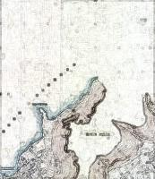 | 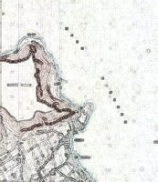 | |||
|---|---|---|---|---|
| 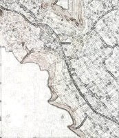 | 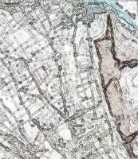 | 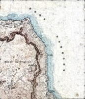 | ||
| 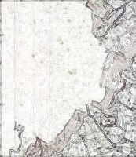 | 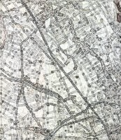 | 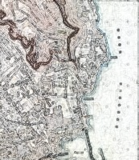 | ||
| 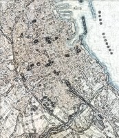 | 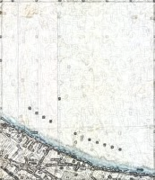 | |||
| 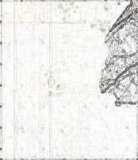 |  |
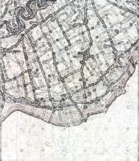 |  |
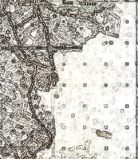 |
Informazioni
Realizzato da:
@aborruso, @piersoft, @cirospat e @gbvitrano
per Open Data Sicilia
Le cartografie storiche in dotazione al Comune di Palermo e presenti nel Portale Cartografico dalla società comunale in house per i servizi informatici SISPI SPA, sono state scansionate e georeferenziate dal Geometra Liborio Plazza del Comune di Palermo
Portale Cartografico a cura di: SISPI SPA
SiciliaHub/mappe: repo github in cui si trovano le mappa create dagli utenti della comunità OpenDataSicilia.it
Un ringraziamento particolare va a @napo che con il lavoro: mappa di Trento 1915 - da un libro di Cesare Battisti ci ha fatto riscoprire la bellezza e l'importanza delle mappa storiche.

Creative Commons Attribuzione 4.0 Internazionale - Creative Commons Attribuzione 4.0 Italia
Condividi questa mappa
Puoi condividere online la mappe con altre persone.
Condividi:


Includi la mappa
Copia e incolla questo codice in documenti HTML per incorporare questa mappa nelle tue pagine web.
Copy and paste this code into HTML documents to embed this map on web pages.